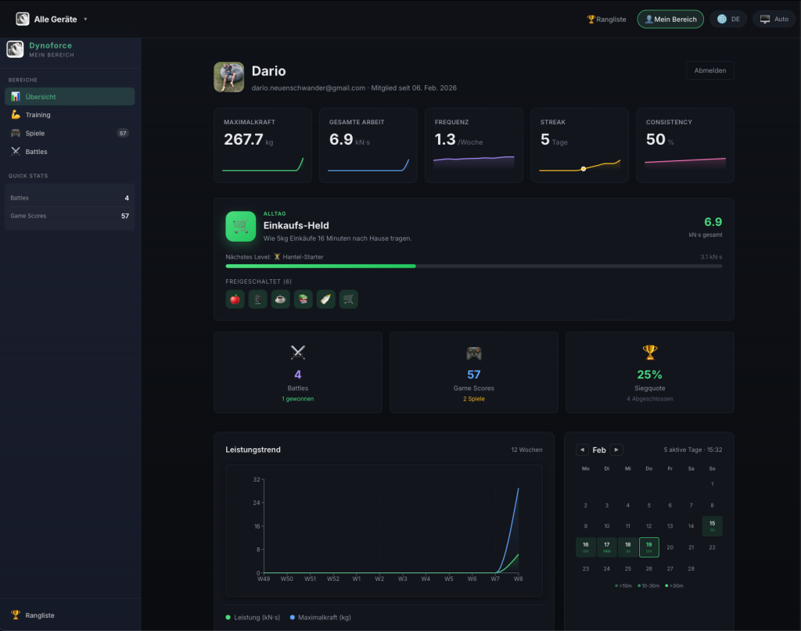

Unsere Vision: Krafttraining mit Fakten statt Gefühl.
Krafttraining basiert oft auf Einschätzung statt auf Messwerten. DynoForce verbindet präzise Sensorik mit einer klaren App, damit Fortschritt sichtbar und nachvollziehbar wird - im Alltag, im Training und in der Rehabilitation.
Warum DynoForce?
Wir bauen Sensoren und Software, die Kraft messbar machen. Nicht für Labore, sondern für echte Menschen im echten Training. Ob am Fingerboard, in der Reha oder im Leistungssport: DynoForce gibt dir die Antwort in Zahlen.
Entwickelt in der Schweiz
DynoForce mit DynoGrip und DynoPull wird in der Schweiz entwickelt - mit Fokus auf präzise Messung, robuste Hardware und einfache Bedienung. Der Anspruch ist ein System, das im echten Einsatz zuverlässig funktioniert.
Wofür wir stehen.
Die Grundidee der originalen DynoForce Plattform bleibt klar: präzise Daten, einfache Nutzung, transparente Kontrolle über die eigenen Trainingsdaten und eine aktive Community.
Jede Messung zählt. Unsere Sensoren liefern zuverlässige Daten, auf die du dein Training aufbauen kannst.
Einschalten, verbinden, trainieren. Die Plattform ist so gebaut, dass sie ohne komplizierte Konfiguration funktioniert.
Deine Kraft, deine Daten. Training soll nachvollziehbar bleiben - lokal nutzbar und optional mit Online-Funktionen erweiterbar.
Leaderboards, Challenges und gemeinsamer Austausch sorgen für Motivation und kontinuierliche Weiterentwicklung.

Ein Ökosystem statt ein Einzelprodukt.
DynoForce ist bewusst als Plattform gedacht. Devices, App und Web-Auswertung greifen ineinander und werden mit Feedback aus der Community laufend verbessert.
Das System ist offen für weitere Geräte, Attachments und neue Trainings- und Spielformen.
Trainingsdaten können lokal genutzt und optional mit Online-Funktionen wie Backup und Ranglisten kombiniert werden.